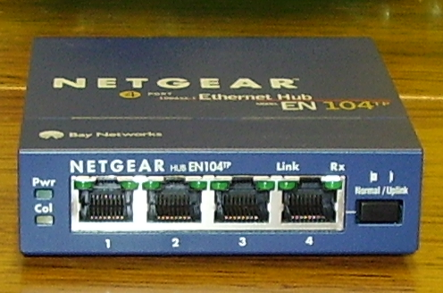

Reconocer y diferenciar
- las funciones básicas de hub, switch y router;
- sus características y limitaciones;
- la capa del modelo OSI en la que actúa cada uno.
Redes de computadoras · Clase 13
Una clase teórico-práctica para comprender cómo circula el tráfico dentro de una red, qué información analiza cada dispositivo y por qué hub, switch y router cumplen funciones diferentes.
Tres dispositivos, tres formas distintas de tratar el tráfico.
Al finalizar la clase podrás:
A simple vista pueden parecer similares, pero internamente toman decisiones distintas.



Repite señales. No interpreta MAC ni IP.
Conmuta tramas según direcciones MAC.
Enruta paquetes entre redes según direcciones IP.
Mirando las fotografías, escribí dos similitudes físicas y dos diferencias funcionales que esperás encontrar.
Un repetidor multipuerto que trabaja en la capa física.
El hub es un dispositivo básico de interconexión. Funciona como un repetidor multipuerto: cuando recibe bits por un puerto, regenera la señal y la replica hacia los demás puertos activos.
PC1 envía una trama unicast a PC3. Explicá qué ocurre en el hub, qué reciben PC2 y PC4 y qué hace finalmente cada NIC.
Aprende direcciones MAC y selecciona puertos de salida.
Un switch Ethernet convencional opera principalmente en la capa 2: Enlace de datos. Inspecciona direcciones MAC y aprende qué MAC se encuentra detrás de cada puerto.
Un switch administrable puede incorporar VLAN, STP, agregación de enlaces, seguridad por puerto, monitoreo y otras funciones. Existen además switches multicapa capaces de realizar funciones de capa 3.
Explicá qué hace un switch cuando conoce la MAC destino y qué hace cuando todavía no aparece en su tabla.
La tabla relaciona direcciones físicas con puertos.
| MAC aprendida | Puerto | Interpretación |
|---|---|---|
00:11:22:33:44:AA | Fa0/1 | PC1 está alcanzable por el puerto 1. |
00:11:22:33:44:BB | Fa0/2 | PC2 está alcanzable por el puerto 2. |
00:11:22:33:44:CC | Fa0/3 | PC3 está alcanzable por el puerto 3. |
Si una trama entra por Fa0/1 con origen AA y destino CC, indicá qué aprende el switch y por dónde la reenvía si CC ya figura en Fa0/3.
Conecta redes IP diferentes y decide el siguiente salto.
El router trabaja principalmente en la capa 3: Red. Examina la dirección IP destino de un paquete, consulta su tabla de enrutamiento y selecciona una interfaz o un siguiente salto.
Explicá por qué dos PCs de 192.168.1.0/24 pueden comunicarse mediante un switch, pero una PC de 192.168.1.0/24 y otra de 192.168.2.0/24 necesitan enrutamiento.
La capa explica qué información puede interpretar cada dispositivo.
Completá para hub, switch y router: capa OSI, unidad que procesa principalmente y tipo de dirección utilizada.
Dos conceptos distintos que suelen confundirse.
Conjunto de interfaces que podrían competir por el mismo medio compartido.
Conjunto de interfaces que reciben una difusión de capa 2.
Tenemos cuatro PCs conectadas a un switch y el switch conectado a un router. Sin VLAN, ¿cuántos dominios de colisión hay en los enlaces hacia las PCs? ¿Cuántos dominios de broadcast representa esa LAN?
Una síntesis para tomar decisiones.
| Dispositivo | Capa | Observa | Decisión | Colisiones | Broadcast L2 | Uso |
|---|---|---|---|---|---|---|
| Hub | 1 | Bits/señal | Replica | Un dominio compartido | No lo filtra | Histórico / laboratorio |
| Switch | 2 | MAC | Conmuta tramas | Un dominio por puerto | Se mantiene dentro de la VLAN | LAN |
| Router | 3 | IP | Enruta paquetes | No se analiza igual que en un medio compartido | Separa dominios | Interconectar redes |
Aplicar el concepto a necesidades concretas.
Observar en una PC real qué elementos de capa 2 y capa 3 participan en la comunicación.
cmd.ipconfig /allBuscá el adaptador que realmente está conectado y registrá:
169.254.x.x, puede indicar que el equipo no obtuvo correctamente
una configuración IPv4 mediante DHCP.
ping 127.0.0.1Interpretación: esta prueba comprueba el funcionamiento local de TCP/IP; no comprueba cable, switch, Wi-Fi ni router.
Tomá la dirección de “Puerta de enlace predeterminada” obtenida en el paso 2.
ping 192.168.1.1Reemplazá 192.168.1.1 por el gateway real de tu equipo.
arp -aObservá asociaciones entre IPv4 y direcciones físicas MAC.
tracert 8.8.8.8Observá los saltos.
ping 8.8.8.8
ping www.google.comSi el primer ping funciona y el segundo no logra resolver el nombre, la conectividad IP puede estar disponible mientras existe un problema de resolución DNS.
route printBuscá especialmente:
0.0.0.0, que representa la ruta predeterminada IPv4.nslookup www.google.comRealizá los nueve pasos y redactá un informe breve que incluya:
tracert.route print.Primera red desde cero: tres PCs, un switch y una sola subred.
En cada PC: PC → Desktop → IP Configuration.
| Equipo | IPv4 | Máscara | Gateway |
|---|---|---|---|
| PC0 | 192.168.10.10 | 255.255.255.0 | Vacío por ahora |
| PC1 | 192.168.10.11 | 255.255.255.0 | Vacío por ahora |
| PC2 | 192.168.10.12 | 255.255.255.0 | Vacío por ahora |
En PC0 abrí Desktop → Command Prompt:
ping 192.168.10.11
ping 192.168.10.12El primer ping puede tardar o perder inicialmente un paquete mientras se resuelven direcciones mediante ARP.
enable
show mac address-tableRegistrá qué IP tiene cada PC, si los pings funcionan y qué entradas aparecen en la tabla MAC del switch.
La práctica central: dos switches, dos subredes y enrutamiento entre ellas.
Utilizá selección automática de cable o Copper Straight-Through.
| Equipo / interfaz | IPv4 | Máscara | Gateway |
|---|---|---|---|
| Router G0/0 | 192.168.1.1 | 255.255.255.0 | - |
| PC0 | 192.168.1.10 | 255.255.255.0 | 192.168.1.1 |
| PC1 | 192.168.1.11 | 255.255.255.0 | 192.168.1.1 |
| Router G0/1 | 192.168.2.1 | 255.255.255.0 | - |
| PC2 | 192.168.2.10 | 255.255.255.0 | 192.168.2.1 |
| PC3 | 192.168.2.11 | 255.255.255.0 | 192.168.2.1 |
Hacé clic en el router → CLI. Si pregunta por el diálogo inicial de configuración, respondé no.
enable
configure terminal
interface gigabitEthernet 0/0
ip address 192.168.1.1 255.255.255.0
no shutdown
exit
interface gigabitEthernet 0/1
ip address 192.168.2.1 255.255.255.0
no shutdown
exit
end
show ip interface briefG0/0/0, G0/0/1 u otra nomenclatura, utilizá esos nombres.
up/up cuando el enlace esté activo.En cada PC: Desktop → IP Configuration. Cargá exactamente los valores de la tabla anterior.
Desde PC0:
ping 192.168.1.11
ping 192.168.1.1Desde PC2:
ping 192.168.2.11
ping 192.168.2.1Desde PC0:
ping 192.168.2.10
ping 192.168.2.11show ip routeDeberían aparecer las redes:
192.168.1.0/24 directamente conectada;192.168.2.0/24 directamente conectada.Desde PC0:
tracert 192.168.2.10El router debe aparecer como salto entre las dos redes.
Completá una tabla de comprobación:
| Prueba | Resultado | ¿Qué dispositivo interviene? | Explicación |
|---|---|---|---|
| PC0 → PC1 | ... | ... | ... |
| PC2 → PC3 | ... | ... | ... |
| PC0 → Router G0/0 | ... | ... | ... |
| PC0 → PC2 | ... | ... | ... |
No alcanza con que el ping funcione: hay que mirar qué paquetes circularon.
Completá para hub, switch y router: qué unidad recibe, qué información inspecciona y a cuántos puertos/interfaces reenvía en el ejemplo observado.
Construir, configurar, verificar y explicar.
Diseñá una red con:
Usá, por ejemplo:
192.168.10.0/24.192.168.20.0/24.show mac address-table en cada switch.show ip route en el router.No memorizar aparatos: comprender qué decisión toma cada uno.
Conceptos esenciales de la sesión.